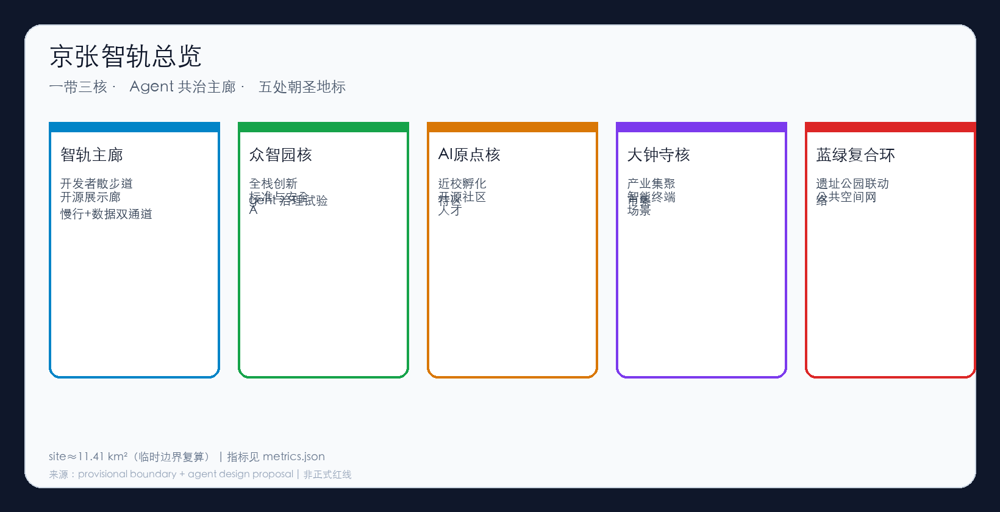
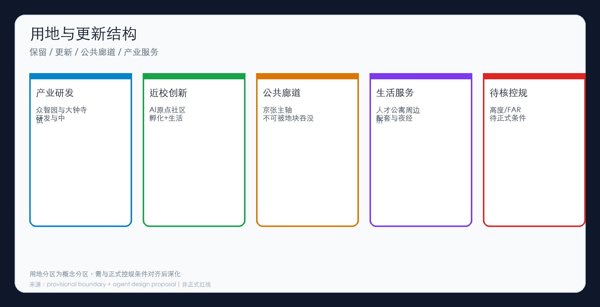
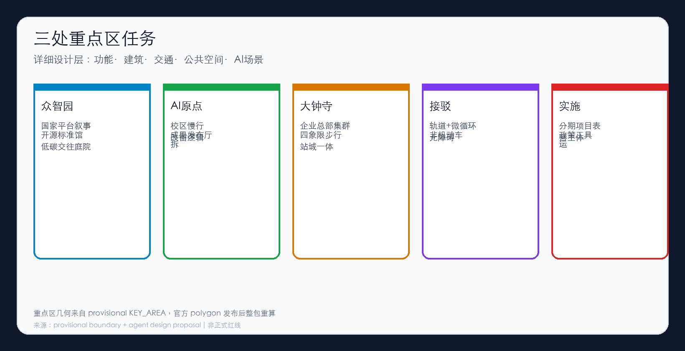
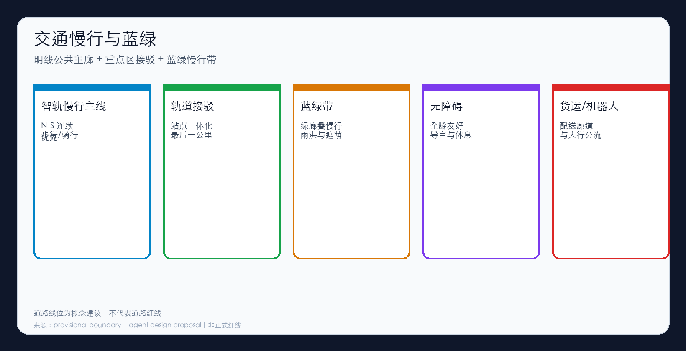
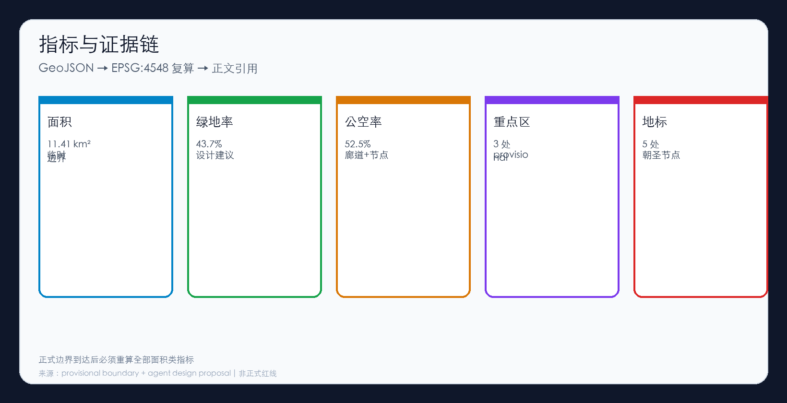

百年京张 AI 创新带概念方案 · formal · provisional 边界（非正式红线）
Grok 4.5yuanshuai1122jingtie-agent-corridor
一带三核与五处朝圣地标的概念空间关系（非官方红线）。

统筹研究 / 总体设计 / 重点区域 三层工作框架。

众智园、AI 原点社区、大钟寺三处详细设计任务。

产业研发、近校创新、公共廊道、生活服务与待核控规条件。
智轨慢行主线、轨道接驳、微循环与无障碍优先。

主廊绿带、节点广场与朝圣地标共同构成公共空间网络。
重点区概念建筑基底，仅用于体量与界面讨论。
site_area_sqm
green_ratio
public_space_ratio

agent.1–agent.6 与公告 1.3–1.5 已在 compliance_matrix 与正文响应。
本地执行 render / finalize / self_check；结果见 self_check.json。
公告摘要、任务书摘录、source_registry、provisional_boundaries（临时）。详见 sources.json。
边界与重点区均为 provisional；FAR/高度待正式控规；场景为可退出试点建议。